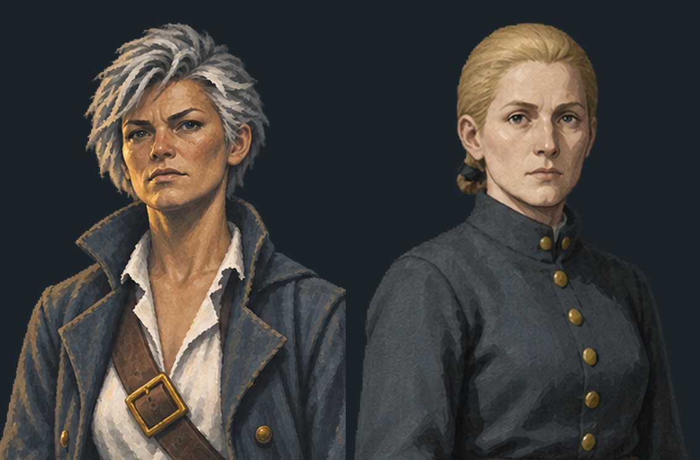
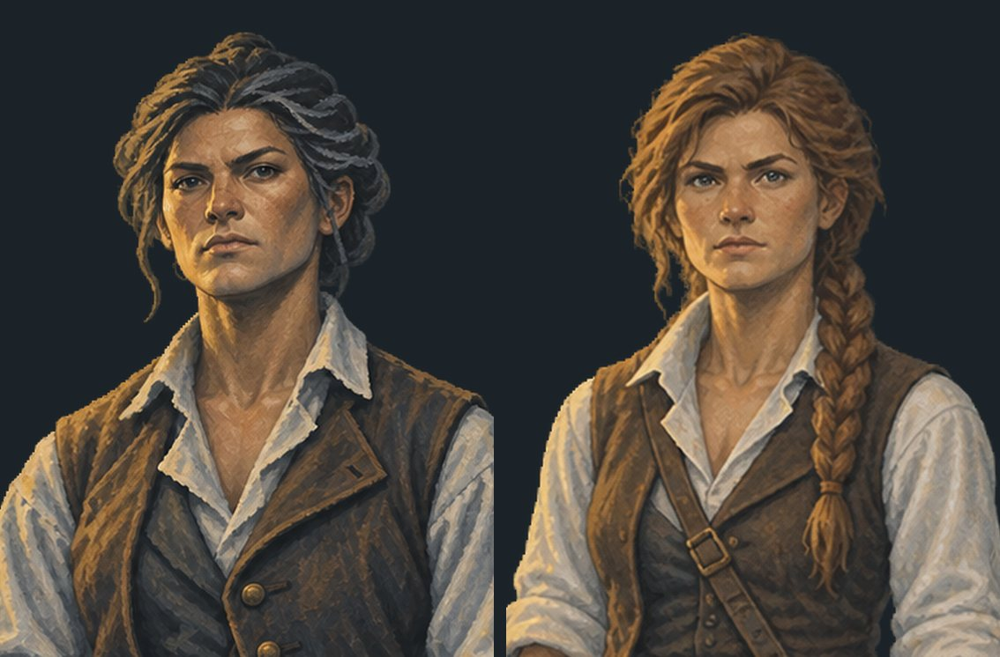
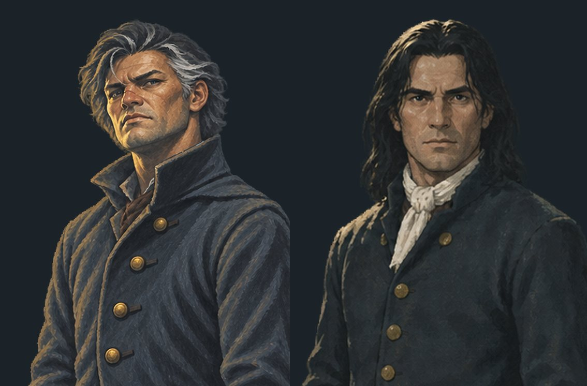
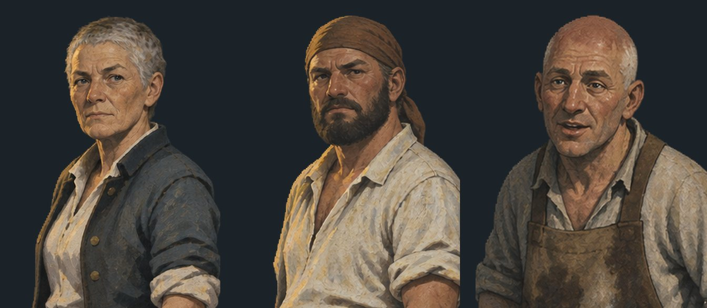
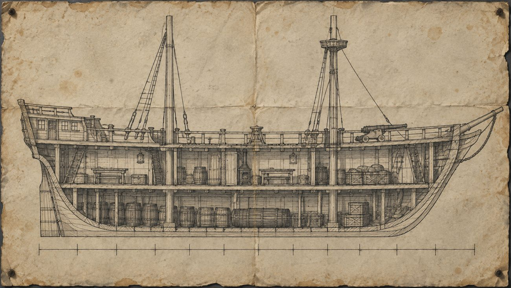
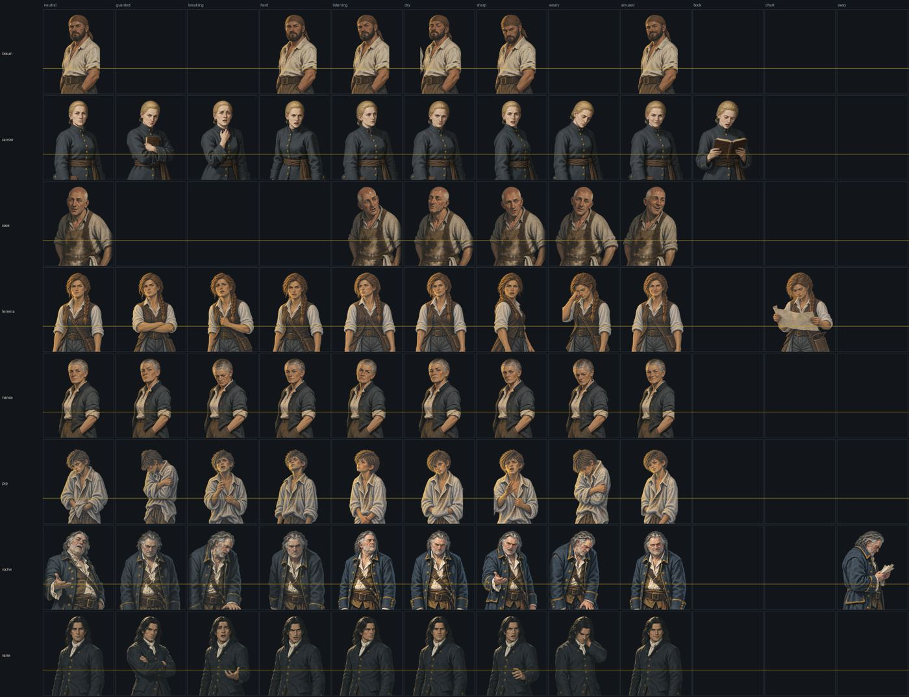

A big week. The dialogue box has been redesigned six times, the text now types itself, half the cast has had a haircut, the ship has acquired a map of itself, and a playtester sent seventy notes that were all, annoyingly, correct. I also discovered that the resource economy I have been carefully rationing for a month is not in any meaningful sense rationed. Pictures this time, because there is finally something to look at.
The dialogue box: an apology in six acts
UI · the longest thread of the week
The game used to put its words in a black gradient panel across the bottom of the screen, which is what every visual novel does and which looked exactly like what it was: a thing switched on rather than a thing made. The note was that it should be paper, in ink, and left-aligned like something written rather than something printed.
So it became parchment. Then it was too big. Then the parchment had a ragged torn edge along the top which the director did not like, so the edge went straight and got a line of thread along it instead — which, given the player is a sailmaker, is roughly a thousand times better and I should have thought of it. Then the parchment became sailcloth. Then the sailcloth was translucent and feathered, and then it stopped being either, because a semi-transparent panel reads as a filter laid over the painting rather than a thing lying on top of it, and it was costing contrast for nothing. Then it lost forty pixels of height.
Six versions. Every one of them was an improvement and I am not sure I have ever enjoyed anything less.
The bit that was not cosmetic
Going from a near-black panel to pale cloth broke every speaker name colour in the game. They had all been chosen against a dark background, and against cloth the worst of them was sitting at a contrast ratio of 2.23 to 1, which is not a colour, it is a rumour. All six were re-solved keeping their hue and pushed back above five to one, and there is now a small script that will tell me the ratio of any colour against the actual composited background rather than against what I think the background looks like.
The font changed too — the text is handwritten now, and the brief was "looks like handwriting but remains legible", which are two requirements that spend most of their time arguing. Getting the files was its own adventure: the obvious download route returned a wall of 403s, so the fonts came down as npm packages and got converted out of web format into something Ren'Py would accept. Nothing about that sentence was in the plan for that afternoon.
Where the player's face goes, an argument in four rounds
The player character now has a portrait, and it has been in four places. On top of the box, where it clipped through the parchment. Greyed out and permanently present, which was wrong. Greyed out only in conversations the player is in, which was also wrong, and was me overriding a perfectly clear instruction and being caught doing it. Then to the left of the box, out of what the director accurately called "prime real estate." Then, finally, the box moved to the middle of the screen and the portrait came back inside it.
What settled it was measurement rather than opinion. Before moving anything, I wrapped every single line in the game through the real font at the real column width and counted. Result: the portrait costs zero extra lines of text, and the player only speaks on about 7% of lines anyway — so the face appears rarely enough to mean something when it does. That same measurement is what let the box shrink twice, and it is the reason I now believe none of the arguing was necessary. Measure the thing. It is always cheaper than being right.
The text types itself now
A one-line fix that took an hour to find
Text used to appear instantly, in full, like a slide. The note was that it should arrive a letter at a time, which is better for retention and also just feels like reading rather than being handed a card.
This is a single built-in setting, so it should have been a thirty-second job. Except I had already set it, and it did not work. A default in one file was being silently overridden by a preference in another — and preferences win, because they are supposed to. So the typewriter had been switched on and immediately switched off again by a line I wrote weeks ago and had forgotten about.
It also needed a one-time nudge for anyone with an existing save, because their preference had already been written to disk at the wrong value. Nobody but me has a save. I wrote it anyway, on the grounds that "nobody has one yet" is how every migration bug in history has begun.
Seventy notes
Playtest · the big round
The playtester came back with about seventy items, and the depressing thing about a good tester is how few of them you get to argue with. Roughly: a third were prose, a third were contradictions, and a third were bugs and ideas. A tour of the more instructive ones.
Things that did not add up
- A man's boots are soaked to the knee, and the only standing water aboard is in the hold — a hold the player later walks through without getting wet. Two scenes written a fortnight apart, each internally sensible, jointly nonsense. Fixed by deciding exactly how deep the water is and then respecting that number everywhere.
- Six men stand in a ring around something. The tester could not tell what was being described. Neither, on rereading, could I. It is a small crowd standing round a body and it now says so.
- You cannot see how he died. A murder mystery in which nobody can see the injury is a very confident piece of design. The player now gets a cause of death — imprecisely, at a glance, from a distance, which is exactly as much as somebody who is not a surgeon would get.
- "Nine days aboard" appears rather a lot. It is the premise's best single fact and I had been leaning on it like a crutch. Thinned out.
- Two hotspots on a chest were labelled the wrong way round, so clicking the lid gave you the description of how the thing was built. Not a writing problem, a coordinates problem, and the sort of thing a fresh pair of eyes finds in four seconds.
Bugs, with one genuinely humbling one
The pause menu was eating clicks. Ask to quit and the confirmation appeared, and you could not press yes or no until you first pressed resume — because the menu underneath was still capturing the mouse. Every action now closes the thing it came from.
The menus were illegible. Pale text on near-white template artwork left over from Ren'Py's default skin. I confidently attributed this to the recent change to ink-coloured text. The director pointed out that "that menu legibility has been in the game since the first iteration, not since the ink change" — which was correct, and which I had in fact discovered ten minutes earlier and then explained wrongly out of sheer momentum. The menus have been unreadable since the day the project started and nobody looked at them, because everybody was looking at the game.
Picking up a second coin announced it as "Silver (2)", which is an inventory count and not a thing that happens to you. The pickup now just says what you were handed and the counting happens quietly in the bag.
Ideas that were better than the notes they arrived in
Three scenes in one place, one picture. The player spends three separate moments on deck across a day and the deck looked identical every time, so no time appeared to pass. There are now morning, noon and late versions — all of them recolours of the same painting, generated in code, costing nothing, and it is startling how much day passes for free.
Somebody asks whether you read a document, and the game let them ask it without knowing you can read. Whether the player character is literate is a real and deliberate uncertainty, so a character casually assuming it torpedoes the whole thing. That question is now gated on somebody actually having found out.
The best one: the player tells the crew that a page is missing from a book. The crew check. There is no page. And in the old version everybody just… accepted that, which is not what thirty armed people would do. Now you get called a liar, and somebody else in the room — not you — points out the physical evidence that proves you were telling the truth. It turns a flat beat into an accusation, a rescue, and a very good question about why that particular person spoke up.
The crew all looked like each other
Playtest · the note that cost the most
The tester's verdict on the cast was that they were "too similar and not memorable." Which is a generous way of putting it. What I had actually done was draw one person five times and give them different jobs.
It was worse than that, though, and it took laying all five heads out in a row to see how. Four of the five had grey or silvering hair. In a setting where the life expectancy of the average pirate was — and I want to be delicate about this — not brilliant. I had built a crew of thirty desperate criminals and given them the hair of a bowls club.
The director's instruction was blunt and correct: not everybody should be going grey, and the two women in dark coats need to stop looking like sisters.
The bit that surprised me
Here is the thing that made this worth writing down. The prompts had already said three completely different things. One was "short grey hair swept back", one was "dark curly hair tied back", one was "dark hair going white at the temples". Three descriptions, three distinct people, in writing, from the start.
The generator read all three and handed back triplets.
So the fix was never going to be better adjectives, because that is exactly what I already had. Adjectives get averaged. Shapes do not. Every character now leads with a silhouette you could pick out from a black cut-out at the size they actually appear on screen, and the colour is the last decision rather than the first.
The cast is now eight outlines and no two are alike: a covered head, a bald head, a braid forward over one shoulder, a club bound behind, loose and long, loose and short, cropped ragged, cropped close. If you cannot tell two of them apart in profile in a dark room, that is a bug now.



The neckcloth is load-bearing
Black hair. Dark navy coat. One light source, from the side, because the whole game has one light source. Congratulations: you have painted a floating head with no neck.
I only spotted it because I was writing the brief rather than looking at a picture, which is the one advantage of doing this in longhand first. So the first mate now wears a loosely knotted white neckcloth, the hair takes a lit edge along the top and nowhere else, and his head is attached to his body. Two of the more romantic details in the game exist because of contrast ratios and I would ask you not to think about that too hard.
The navigator's rolled chart also went away and came back as a case on a strap. Same reasoning as the quartermaster's book last month: a prop held up becomes the pose, and then the pose lands on every line the character has. On a strap it is permanently part of her outline and can never take over. There is exactly one picture where the chart comes out, and it is the one where she reads the thing.
The damage: six sheets regenerated, thirty-one figures drawn, twenty-eight perfectly good ones binned. Worth it. Two suspects who look like sisters is not a preference in a murder mystery, it is a defect.
Three new faces, and the states they don't get
Art · the crew who are not suspects
A mechanic I have been building needs the ship to notice you, and "thirty people" cannot notice anything. Only somebody can. So there are now three named hands who are never accused of anything: an old sailor with forty years at sea and no interest whatsoever in rank, a bosun who hands out the work, and a cook who sees every man aboard twice a day and repeats all of it.

Here is the decision I like most this week, and it is a decision to do less. The four suspects each have nine expressions. The bosun and the cook have six, and the missing three are missing on purpose.
guarded and breaking exist so that the player can be wrong about somebody. Nobody is ever going to suspect the cook. Give him a guarded, withholding, secretive face and I guarantee you it ends up on a line about soup — which is precisely how the quartermaster spent last month brandishing a book at everyone she spoke to. A state a character has no use for is a state that gets spent on the wrong line.
The code fills the gaps invisibly: ask for any of the nine and you get the nearest thing that exists. Nobody will ever know except you, and now everyone who reads this.
Their name colours took an afternoon too. The four suspects each hold a distinct hue; these three are a family of three quiet inks that sit together and apart from the people who matter to the plot. All of them solved against the actual cloth of the dialogue box at between five and six to one, because a devlog is exactly where that sort of thing belongs.
The ship has a map of itself
Systems · and a small miracle of guesswork
There is now a ship's plan. It is a drawn schematic rather than a painted scene, which is cheaper, more period-correct, and — this matters — shows no horizon, so it does not break the rule that you see nothing but empty grey water until the game decides otherwise.

The map is not navigation. It is the exposure system. Every move is a small act of being seen somewhere you had a reason to be, or didn't. You get a handful of hours in a day, and you spend them either finding things out or doing your actual job — and doing your actual job is what buys back your invisibility. Investigate loudly and the ship starts looking at you. Nobody is ever shown a number.
In chapter one the plan is on screen and every node is locked, because in chapter one you are taken places. Nobody asks the sailmaker's opinion. Each refusal is written separately and my favourite is the forecastle: "Thirty men sleep forward. You are not one of them." That is one sentence doing the work of a paragraph of exposition, and it also happens to be the reason nobody can alibi you on the night of the murder.
The bit I am unreasonably pleased about
I wrote all seven clickable regions before the drawing existed, guessing where a shipwright would put a brig's compartments and writing the coordinates into a table so that when the art arrived only the numbers would need to change.
Then the plan came back and I laid the boxes over it expecting to spend a happy hour nudging rectangles. Four of the seven were within a few pixels. The galley box had a stove in it. Three needed moving — the crow's nest onto the actual mast platform, the deck down onto the actual deck, the hold out to the full run of the ship — and nothing else in the file was touched.
I have chosen to interpret this as expertise rather than luck and I would ask you to do the same.
Somebody finally asked what the port is
Story · a hole that had been there since the pitch
There is a clock in the corner of the screen counting down to landfall. It has been there since the first build. This week the director asked the obvious question — what actually is that place? — and the honest answer was that nobody had ever decided. It was a name on a timer.
It is now a pirate haven: forty taverns, fresh water, no law and no magistrate. And the load-bearing half of the decision is this — it is not where they are going. It is where they stop for water on the way.
That one sentence fixes something that had quietly bothered me for weeks: why is a crew who signed on for treasure counting down to a port? Because that is exactly what a sailor counts. The next landfall, not the goal. You water at the Key and then the captain shows you where the prize is. Nobody has to explain it, because it is the most normal thing in the world.
And it turns a later moment from an abstraction into an emergency, because you do not sail past your water. A number on a screen becomes a thing thirty people would riot about. Same clock, same number, entirely different meaning — and not one line of code changed.
Fourteen puzzles, written down at last
The other thing that did not exist was a list of the puzzles. Not the design of them — the list. The director's note was that without one "we are moving in the dark," which was polite, because we were.
There are now fourteen, mapped across all six chapters, with three rules over the top of them: every puzzle is solved by the player's trade or by a person, never by a hidden object; nothing on the critical path is ever locked behind one; and anything that would need a hint system is cut on sight. Four of the fourteen are things you can fail to notice. The other ten are decisions, which is a different and better kind of difficulty.
Writing them down immediately paid for itself. Half of them turned out to already exist in the game as unused capability — the player has been carrying something since chapter one that opens things, and in a month of design nobody had thought to have it open anything.
And money became useful
The player picks up the occasional silver coin, and until this week those coins were receipts. They now buy the only thing worth buying in a game about not being noticed: a coin means somebody did not see you. You can pay for something instead of stealing it. You can pay for a favour instead of asking for one loudly. Between two and six coins in the entire game, so every one of them is a decision.
Nothing in the game will ever say this out loud. The player works out that money is quiet.
The economy that turned out not to be one
Design · caught by arithmetic, not by playing
The game has one consumable resource. You get a fixed amount for the entire game and you cannot get more. Everything you do costs some, and the whole tension of the thing is supposed to be that you cannot afford to do everything properly.
This week I wrote a small script to walk every possible route through chapter one and tell me what the player arrives at chapter two holding. Then I subtracted what chapter two's three big purchases cost.
The answer is that you can buy all three and still have eight left out of fourteen. They do not compete. There is no choice. I have spent a month running an economy of scarcity in which nobody is ever short of anything.
The instinct is to cut the number, and the instinct is wrong. Fourteen is fine — the problem is that chapters three to six have no prices on them yet. The tax exists. I simply have not sent anybody a bill. So the number stays and the later chapters get costed, and I will find out at the next playtest whether anybody feels it.
The wider lesson, which I am writing on a wall somewhere: scarcity is created by things worth buying, not by taking supply away. A player who is never tempted is not being rationed, they are being ignored.
Writing chapter four before chapter two
Story · deliberately out of order
Chapter two is almost entirely planting. Nearly everything in it is a small object, a stray remark or a flag being quietly set, and every single one of those is a promissory note against a scene much later in the game.
The trouble with writing a chapter of promises is that it is extremely easy to write a lovely one that promises things nobody can pay. So chapter four got outlined first — not written, outlined — and the useful part of the document is a table with two columns: every plant chapter two is allowed to make, and the exact beat of chapter four that pays for it. If a plant has no row, chapter two does not get to plant it.
Writing it in that order immediately caught something. There was a moment in chapter four that needed the player to have found something out in chapter two, and nothing in the game produced it. Not hard to fix — but I would have written the whole of chapter two, felt very pleased with myself, and hit the wall four weeks later.
It also settled the running order of the chapter's three big moments, which I had the wrong way round. I will not say what they are, but the principle survives being vague: if the point of a story is that solving the mystery does not save you, then the mystery has to be solved first and the floor has to give way second. Do it in the other order and you have not written an inversion, you have written two things that happen.
A box that was telling you the answer
Chapter one · a revision, on paper
An early scene has you opening something you should not open. What was inside it explained roughly two thirds of the plot, on day five of six, to a player who had been aboard for about forty minutes.
Two separate problems, and they are both the same problem. It is not credible — the one person with the means and the motive and a two-day head start would simply have taken it. And it is not fun, because it hands over the answer before the questions have finished arriving.
So the scene now ends on an absence and a broken thing rather than a discovery. Somebody has already been here. What was in it is gone. The one document left behind is one you are physically incapable of reading, not because you are illiterate — although you might be, that is a whole other mechanic — but because reading it is a trade you do not have. You can see it is a course. You cannot see where it goes.
Which means you now have to get somebody else to read it for you, and every single person you could ask costs you something. That is a puzzle. What was there before was a cutscene.
The prose is written and is currently sitting with the director for a pass, because I have learned to stop applying my own dialogue on the same day I write it.
Small things, quickly
Housekeeping
- Narration is now vertically centred in the box. It has no speaker name above it, so at the same position as dialogue it left a blank band across the top that read as a missing element. On the old taller box you never noticed. On the new shorter one you notice instantly, which is the sort of thing that happens when you change one number and inherit a second problem for free.
- The journal got an icon to replace the word BOOK, and then got it again because the first cut came back with a blue rectangle behind it. The keying now works on the observation that the background is cool and the object is warm, which is true of every piece of art in this game and is going to keep being useful.
- The menu moved to the top left, above the clock and the thread count, where the eye already goes.
- The checker learned a new trick. It now catches any variable the game uses that nobody ever declared. There is a large rename coming, and a rename that misses one spot does not crash on launch — it crashes the first time a player reaches that one line, which is the most expensive possible place to find out. Verified the same way as last month's echo rule: put the bug in, watch it get caught, take it out again.
- A review sheet that has existed in documentation since August now exists in reality. Every character, every expression, at the real size, with a line showing where the dialogue box starts. It is how I checked this week's thirty-one new figures in about nine seconds instead of opening them one at a time like an animal.

Open
Next up